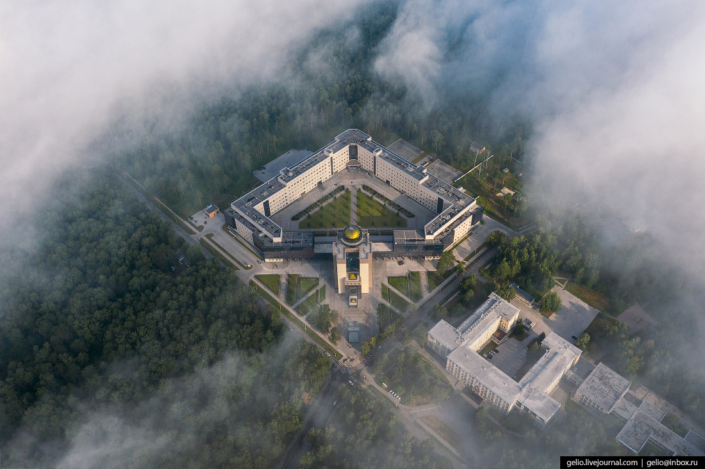
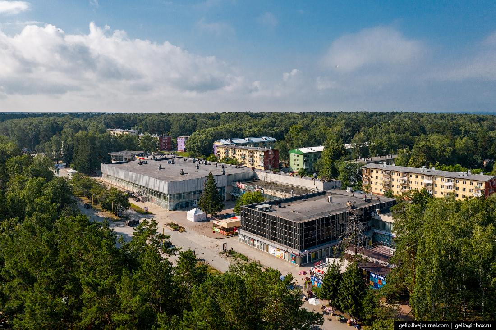
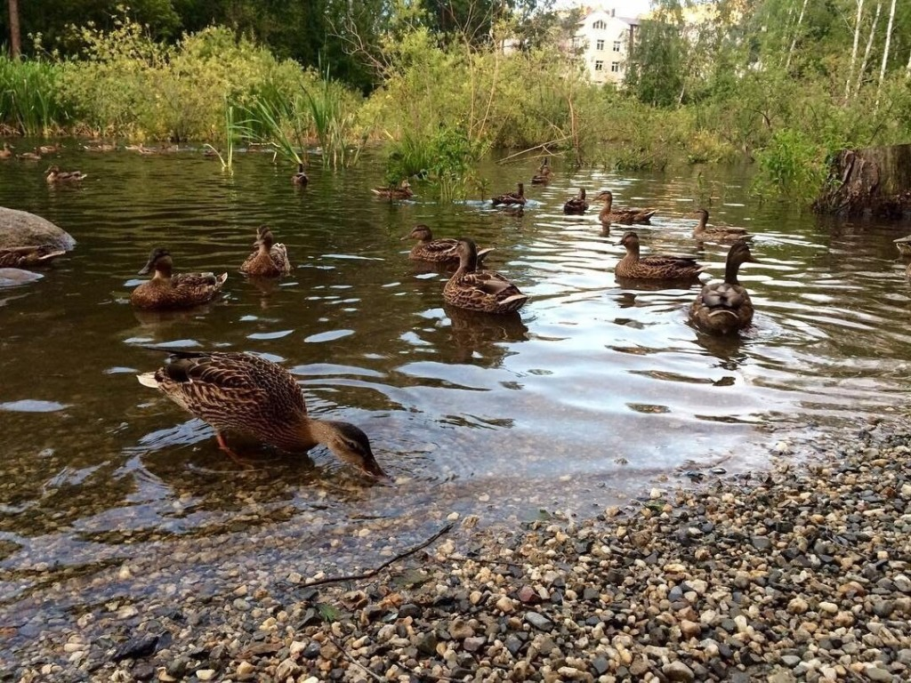
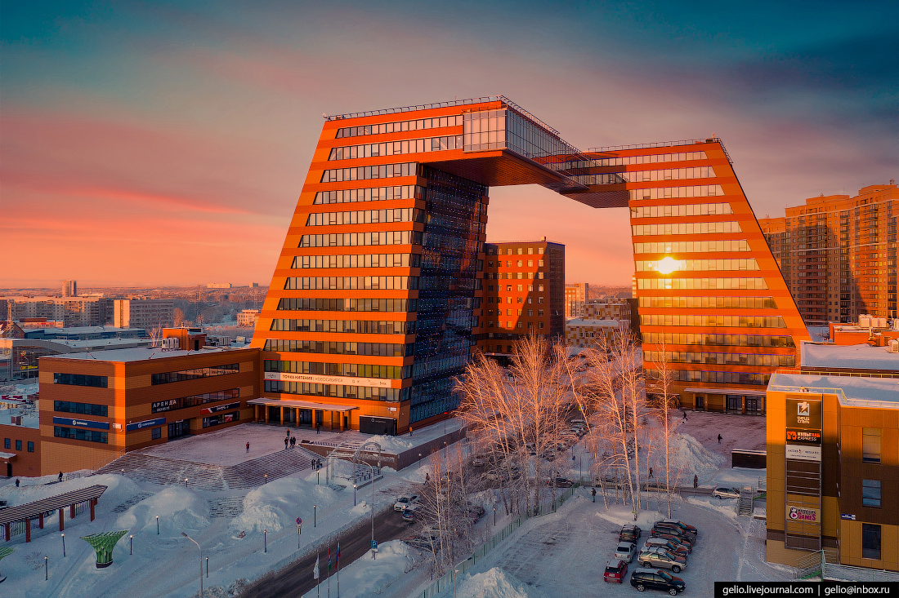

Вело-пробег по Академгородку
Подготавливаемся
Начинается вело-маршрут по главным достопримечательностям Академгородка. Приблизительное время поездки, 3-4 часа. Останавливаясь на каждой остановке на 10 минут.
Стартуем
Начало маршрута первая точка
Начинается вело-маршрут, с нового корпуса НГУ. Во внутреннем дворике НГУ можно посидеть поработать за ноутбуком, или почитать книгу. Там красивый подстриженный газон, на котором можно сидеть. Через дорогу от НГУ, есть небольшой памятник. Памятник шпаргалке
Торговый центр Академгородка и ДК "Академик"
Движемся дальше, вниз по улице Ильича. И видим Торговый Центр Академгородка, он является первым большим магазином в Академгородке, в котором можно было купить и продукты, и бытовые принадлежности. По левую сторону от Торгового Центра расположился так называемый Муравьиный лес. Если пройти чуть дальше по улице, то можно будет увидеть, Дом культуры "Академик". После постройки (1964) он назывался кинотеатр "Москва". Вместительность зала была 810 человек. Но после в декабре того же года было принято решение, переименовать Кинотеатр "Москва", в Дом культуры "Академик".
Дома академиков
Пруд с утками
Двигаемся дальше, на перекрестке Морского проспекта, и улицы Ильича, поворачиваем направо. И идем до перекрестка с улицей Мальцева. Поворачиваем на нее по сторонам улицы будут, дома академиков. Которые тут когда-то жили, это самый дорогой район в Академгородке. Идя дальше по улице Мальцева. Слева вы увидите, небольшой пруд с утками. Уток можно покормить хлебом. Или посмотреть на них с мостика.
Проезд в Ботанический сад
Двигаемся дальше вниз по Золотодолинской улице, не сворачивая до перекрестка. Слева будет забор в Ботанический сад обычно ворота закрыты. Поэтому едем дальше по улице Теплой, до перекрестка с Васильковой. После поворачиваем налево, и едем дальше до шлагбаума, проходим его и едем уже по территории Ботанического сада.
5-ая наша остановка, это двор перед главным здание Ботанического сада. В нем очень большое количество цветов, они высажены различными узорами, так же есть несколько фотогнезд.
Пикник, отдых.
Мы двигаемся дальше по дороге чуть левее здания, Едем прямо в горку, пока не доедем до озера. Слева от озера есть красивая лужайка. На ней можно устроить пикник поесть фруктов и просто передохнуть. Когда отдохнете, можно ехать дальше.
НИИ Гидродинамики имени М.А. Лаврентьева
едем по той дороге которая самая близкая к озеру. Ехать надо всегда по левую сторону, когда вы будете ехать вы увидите резкий поворот налево. Поворачиваем и едем дальше. И вот мы снова выехали в сам Академгородок. Едем по дороге прямо. После двух домов с красной крышей, будет еще одна местная достопримечательность. Это первый возведенный в Академгородке Институт гидродинамики имени М.А. Лаврентьева.
Академпарк
Выдвигаемся дальше, к последней точке нашего маршрута. Едем прямо до перекрестка, на нем поворачиваем, налево. И едем прямо не сворачивая, до перекрестка с улицей Академика Будкера. Поворачиваем на нее, и едем до криогенного корпуса, после него поворачиваем налево, и едем прямо до первого перекрестка. По правую сторону, будет Академпарк. Это две наклоненные, башни соедененные на 13 этаже переходной галереей.
Возвращение
Едем по улице Николаева вниз. До перекрестка с улицей Пирогова. На перекрестке поворачиваем налево. И едем вниз до нового корпуса НГУ. Вот и закончился, наш вело-маршрут.